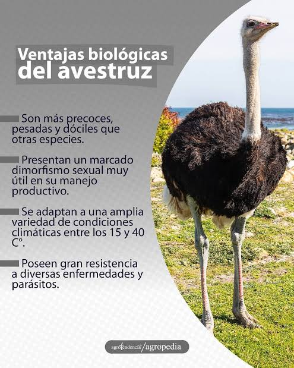

El avestruz es el ave más grande y pesada del mundo.
No puede volar, pero es el animal de dos patas más rápido
de la Tierra, ya que alcanza velocidades de hasta 70 km/h gracias
a sus potentes extremidades de solo dos dedos. Características físicas
Dimensiones: Los adultos miden entre 2 y 3 metros de altura y pesan de 100 a
180 kg. Plumaje: Existe dimorfismo sexual; los machos son negros con puntas blancas
en alas y cola, mientras que las hembras muestran un plumaje gris pardo. Cabeza y ojos:
Tienen la cabeza pequeña y el cuello largo y desnudo. Sus ojos miden unos 5 centímetros de
diámetro, siendo proporcionalmente más grandes que su cerebro.